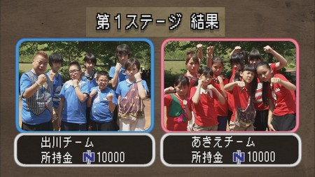

【速報・大！天才クエストⅡ ＳＴＡＧＥ１】
大天才テレビジョン・広報のもっちーです！
出川チームとあきえチームが、リゾートご招待券をかけてバトルを繰り広げている
「大！天才クエストⅡ」ＳＴＡＧＥ１【大魔王の森】での戦いの結果は、この通り！

両者一歩も譲らぬ大接戦となっております！
古坂大魔王からリゾートご招待券を取り返すことができるのは、どちらのチームになるのか？
明日ＳＴＡＧＥ２もお見逃しなく！
投稿者:もっちー＠大天才テレビジョン広報室 | 投稿時間:18時54分 | カテゴリ：お知らせ！ | 固定リンク


 " title="ソーシャルブックマークについて">
" title="ソーシャルブックマークについて">
※NHKサイトを離れます。